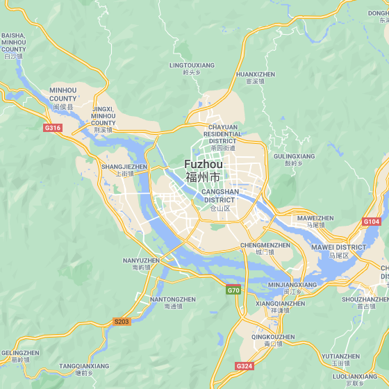
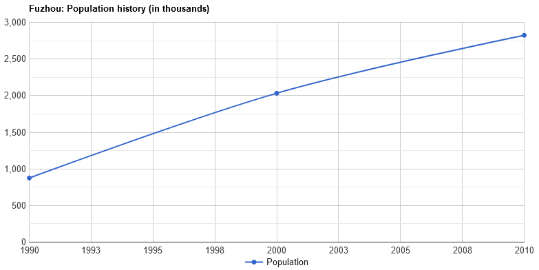
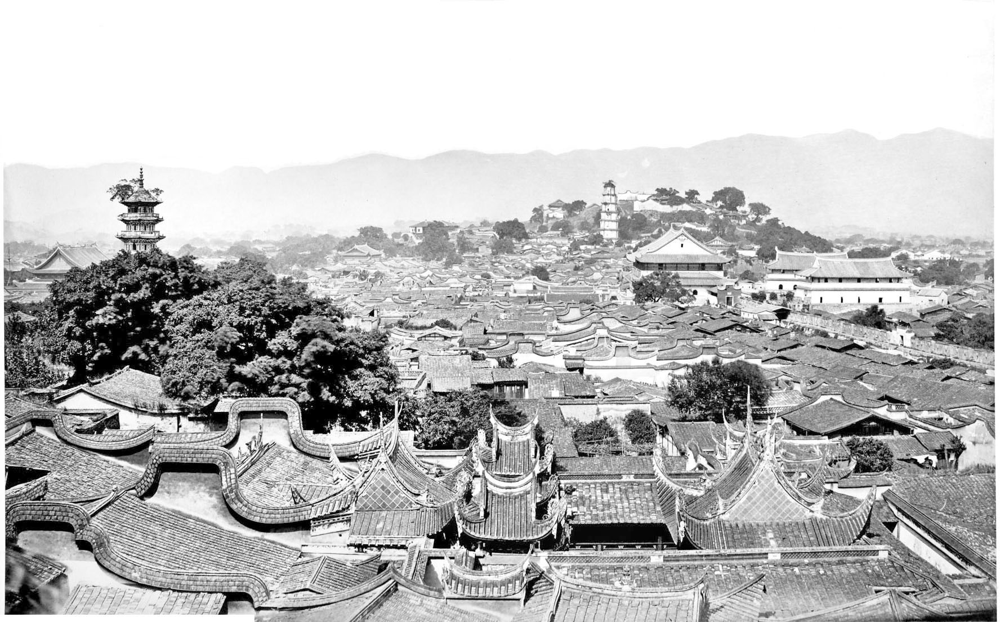
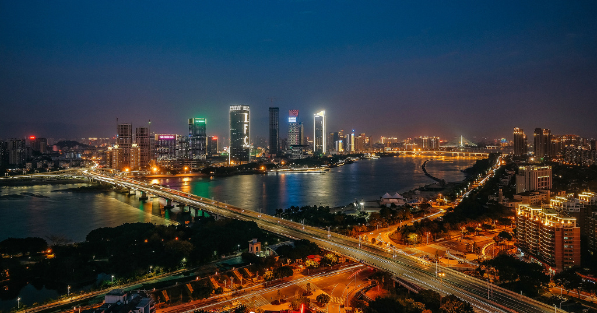

Location
Fuzhou City, China
Fuzhou, alternately romanized as Foochow, is the capital and one of the largest cities in Fujian province, China. Along with the many counties of Ningde, those of Fuzhou are considered to constitute the Mindong (lit. Eastern Fujian) linguistic and cultural area.Fuzhou lies on the north (left) bank of the estuary of Fujian's largest river, the Min River. All along its northern border lies Ningde, and Ningde's Gutian County lies upriver. Its population was 7,115,370 inhabitants as of the 2010 census, of whom 4,408,076 inhabitants are urban representing around 61.95%, while rural population is at 2,707,294 representing around 38.05%.
Demographics
| 1990-2000 | +8.79 %/year |
| 2000-2010 | +3.34 %/year |
Source: population.city
History of the Population
Fuzhou was occupied by People's Liberation Army with little resistance on 17 August 1949.[28]In the 1950s, the city was on the front line of the conflict with KMT in Taiwan, as hostile KMT aircraft frequently bombed the city. The bombing on 20 January 1955 was the most serious one, killing hundreds of people.
Culture and Attractions
Culture
Besides Mandarin Chinese, the majority local residents of Fuzhou (Fuzhou people) also speak Fuzhou dialect (福州話), the prestige form of Eastern Min. Min opera, also known as Fuzhou drama, is one of the major operas in Fujian Province. It enjoys popularity in the Fuzhou area and in neighboring parts of Fujian such as the northeast and northwest areas where the Fuzhou dialect is spoken, as well as in Taiwan and the Malay Archipelago. It became a fixed opera in the early 20th century.
Attractions

Fuzhou is famous for its street food and snacks. Some notable street food dishes include Fuzhou fish balls (魚丸), meat-pastry dumplings (扁肉燕), oyster cake (海蛎饼), rice scroll soup (鼎邊糊), guong bian (光餅; a kind of mildly savory pastry), and pork floss (肉鬆). Many of these street food dishes have a long history and their own local legend; an example would be the oyster cake, according Fuzhou local folklore, in the early Qing dynasty, there was a young man who inherited his father's dim sum business, despite all his hard works, he only managed to earn enough money to feed himself, not enough to raise and feed a family of his own. One night, he dreamt of a silver-haired elderly man, who told him that he has very good fortune, the young man then asked him what he can do to obtain good luck, the elderly man then floated away.
Economy
Driven by manufacturing
Industry is supplied with power by a grid running from the Gutian hydroelectric scheme in the mountains to the northwest. The city is a center for commercial banking, designer brands and timber-working, engineering, papermaking, printing, and textile industries. A small iron and steel plant was built in 1958.
In 2008, exports reached US$13.6 billion, a growth of 10.4 percent while imports amounted to US$6.8 billion. Total retail sales for the same period came to ¥113.4 billion and per capita GDP grew to ¥33,615.[47] During the same period, Fuzhou approved 155 foreign-invested projects.
Source: Wikipedia